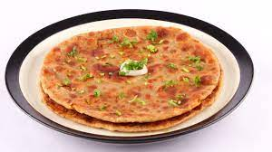

Aloo-Prantha

Description
Aloo paratha is a bread dish originating from the Indian subcontinent. It is a breakfast dish originated from the Punjab region.
The recipe is one of the most popular breakfast dishes throughout the western,
central and northern regions of India as well as the eastern regions of Pakistan.
Ingredients
- Potato
- Wheet Flour
- Butter
- Ghee
- Red Chilli
- Green Chilli
- Salt
- Coriander
Steps
- Wheet Flour - make dough
- Mashed Potato - potatoes are boiled, peeled and then mashed
- Green Chilli - add into mashed potatoes as per taste
- Red Chilli - add into mashed potatoes as per taste
- Salt - add into mashed potatoes as per taste
- Coriander - add some coriander leaves into mashed potatoes as per taste
- Ghee - roast the stuffed prantha with ghee
- Butter - server it with butter for added taste
Go to HomePage